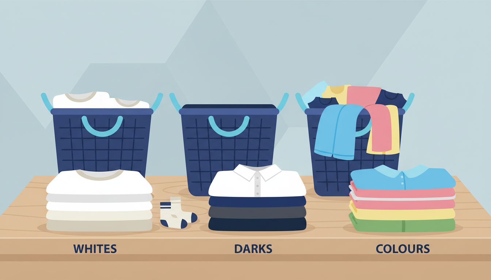

If you've ever pulled a load of whites out of the machine only to find them tinted pink by a rogue red sock, you already know why sorting matters. But laundry sorting isn't just about colour bleeds — it's about getting better results from every wash. The good news is it's simpler than most people think.
Why Sorting Your Laundry Matters
Preventing colour transfer. Dark and brightly coloured garments can release dye during washing, especially in warm water. This dye transfers to lighter fabrics, causing that dreaded grey tinge on whites or colour stains on pale clothing. Sorting by colour keeps your lights bright and your darks rich.
Protecting different fabrics. Heavy items like jeans need a more vigorous cycle than silk or lace. Sorting by fabric type lets you choose the right settings for each load.
Getting a better clean. Heavily soiled gym clothes need more agitation and hotter water than lightly worn office wear. Sorting by soil level means each load gets the treatment it actually needs.
Sorting by Colour
This is the most important sort. Here's how to break it down:
Whites: Anything entirely white — t-shirts, socks, underwear, sheets. Keeping whites separate prevents colour transfer from dulling them over time.
Lights: Pastels and pale colours — light blue, cream, beige, light grey. These tolerate small amounts of dye transfer from each other but will quickly pick up dye from darks.
Darks: Black, navy, dark grey, brown, and deeply saturated colours. These release the most dye, especially when new.
Brights and reds: If you have enough, separate vibrant reds and bright colours into their own load. Red dye is notorious for bleeding.
Sorting by Fabric Type
Heavy and durable: Jeans, towels, hoodies. These handle a normal cycle with warm water and produce a lot of lint, so keep them separate from lighter fabrics.
Regular everyday: T-shirts, casual shirts, underwear, socks. A standard cold or warm cycle works perfectly.
Delicates: Silk, lace, fine knits, bras. Use a gentle cycle with cold water and a mesh laundry bag for small items.
Activewear: Synthetic gym clothes and moisture-wicking fabrics. Cold gentle cycle, and skip the fabric softener — it clogs the fibres.
Sorting by Soil Level
Lightly soiled: Office wear, sleepwear — a shorter, cooler cycle is fine.
Heavily soiled: Muddy clothes, gym gear, work clothes from physical jobs. These need a longer cycle, warmer water, and possibly a pre-soak.
The Minimum Sort: Keep It Simple
If multiple piles feels like too much, here's the absolute minimum: lights and darks. Two piles. This single step prevents the vast majority of colour disasters and takes thirty seconds. As you get comfortable, add a third pile for towels and heavy items.
Common Sorting Mistakes
Ignoring care labels. That "hand wash only" label exists for a reason. Check labels on new or expensive items.
Overloading the machine. Sorting doesn't help if you cram too much in. Fill the drum about three-quarters full.
Forgetting to check pockets. Tissues, coins, pens — pocket contents cause more laundry disasters than colour bleeding.
Sorting at the Laundromat: Your Secret Advantage
At home, sorting means running three or four loads over an entire day with one machine. At a laundromat, you run multiple machines simultaneously. Sort at home, bring separate bags, load each pile into its own machine, and have everything washed in a single visit.
At Laundry Day, we have 14KG, 18KG, and 27KG machines, so you can match each sorted load to the right size. A small delicates load goes in a 14KG while your towels go in an 18KG. Everything runs at the same time, and you're done in under an hour.
Our locations in Brunswick East, St Albans, and Maribyrnong all have plenty of machines for running multiple loads side by side. Detergent is included, and we never charge card fees.
Sorting is one of those small habits that pays off every wash. Your clothes last longer, your whites stay white, and everything comes out cleaner. Start with lights and darks, and go from there.
Sort, Load, and Go
Run multiple sorted loads at once with Laundry Day's range of machine sizes. Free detergent, zero card fees.
Find Your Nearest Location